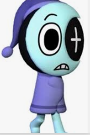

I have a pet toe and his name is Astro. Sometimes I just call him A Toe, cause he's still a toe. He said that he came from space, and I said, "What." He also says that he's 35 and that I should stop treating me like he's 5. I just patted his head. I feed him, bathe him, and take him on walks. I guess that he wasn't kidding when he said he's from space, because he has 4 arms (which I think is normal for a toe) and one time I went in his room and I saw him floating in mid-air and his eye was glowing. I didn't think much about it though. Astro eats 2 jellybeans and drinks 1 juicebox a day. He sometimes asks for more food so I give him a cracker. He prefers Club and not Ritz. I love Asstoe. I mean Astro.
Astro actually has a lot of friends. His best friends are Dandy and Dyle. He is also part of a book club where he attends every Friday, Saturday, and Sunday. Astro also says he has a dad, even though I never met him. But that's ok. Astro is still social to his favorite Toons.
